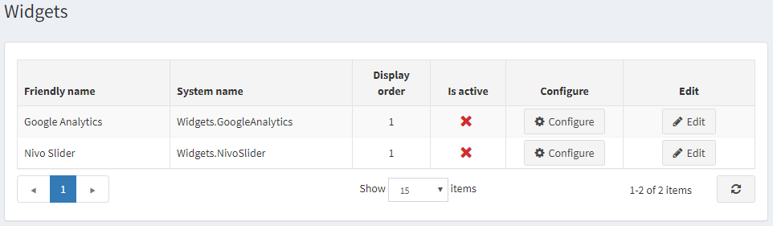
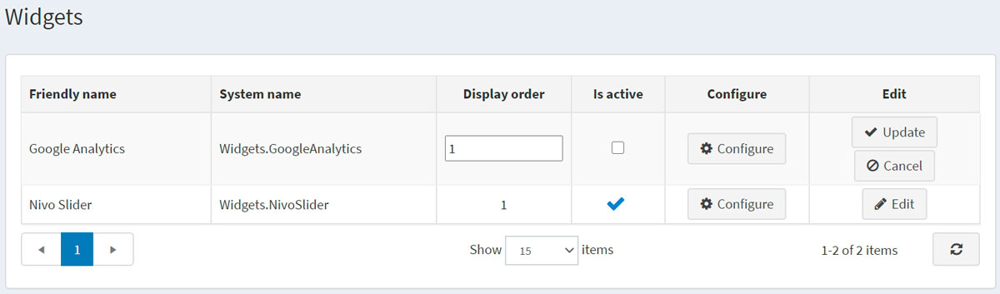
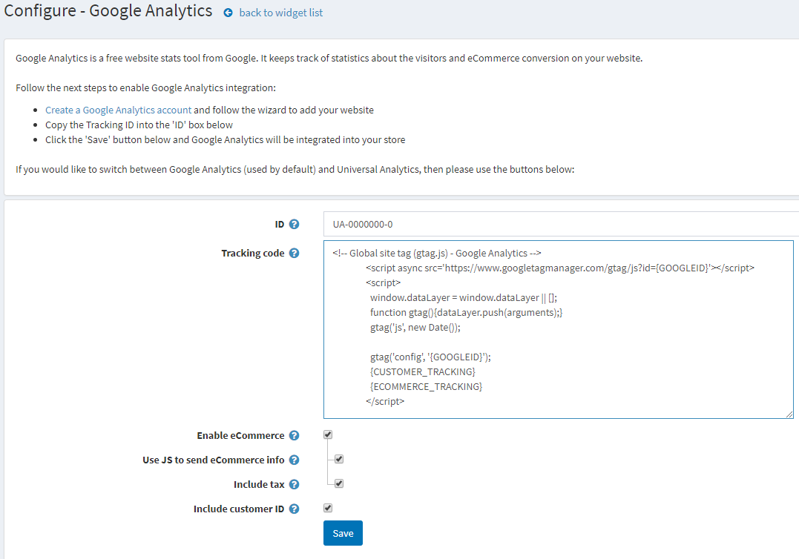

Google Analytics 外掛
本節說明如何將 Google Analytics 外掛新增並整合至您的商店。
若要設定 Google Analytics 外掛：
前往 設定 → 小工具。隨即會顯示「小工具」視窗：

啟用外掛
點選 Google Analytics 旁邊的 編輯。視窗將展開如下：

勾選 是否啟用 核取方塊以啟用 Google Analytics 外掛。接著點選 更新 按鈕以儲存變更。
設定外掛
點選 Google Analytics 旁邊的 設定。隨即會顯示「設定 – Google Analytics」視窗如下：

請執行以下步驟以啟用 Google Analytics 整合：
- 依照連結 http://www.google.com/analytics/ 建立一個 Google Analytics 帳戶，並依照精靈指示新增您的網站。
- 將 Google Analytics ID 複製到表單中的 ID 欄位。
- 輸入由 Google Analytics 產生的 追蹤碼。{GOOGLEID} 與 {CUSTOMER_TRACKING} 將會被動態取代。
- 勾選 啟用電子商務 核取方塊，將訂單資訊傳遞至 Google 電子商務功能。若勾選此項，將顯示以下欄位：
- 勾選 使用 JS 發送電子商務資訊 以使用 JS 程式碼，從訂單完成頁面發送電子商務資訊。針對採用重新導向付款方式的情況，部分顧客可能會跳過此頁面。否則，電子商務資訊將會透過 HTTP 請求發送。每次支付訂單時都會發送資訊，但此模式不支援 UTM。
- 勾選 包含稅金 以在產生電子商務部分的追蹤碼時包含稅金。
- 勾選 包含顧客 ID 核取方塊，將顧客識別碼包含在指令碼中。
點選 儲存。Google Analytics 即會整合至您的商店中。